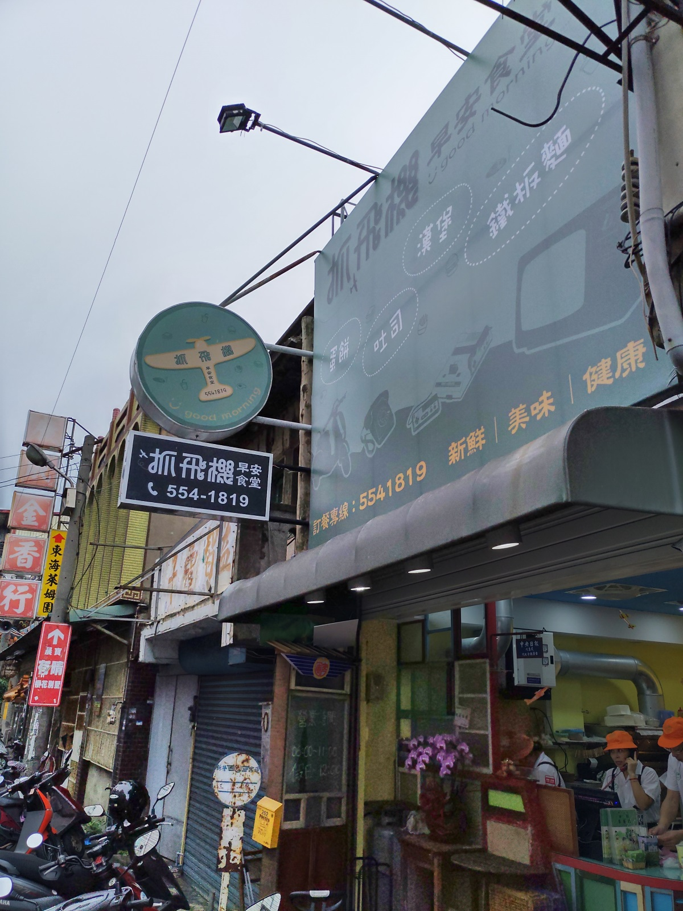
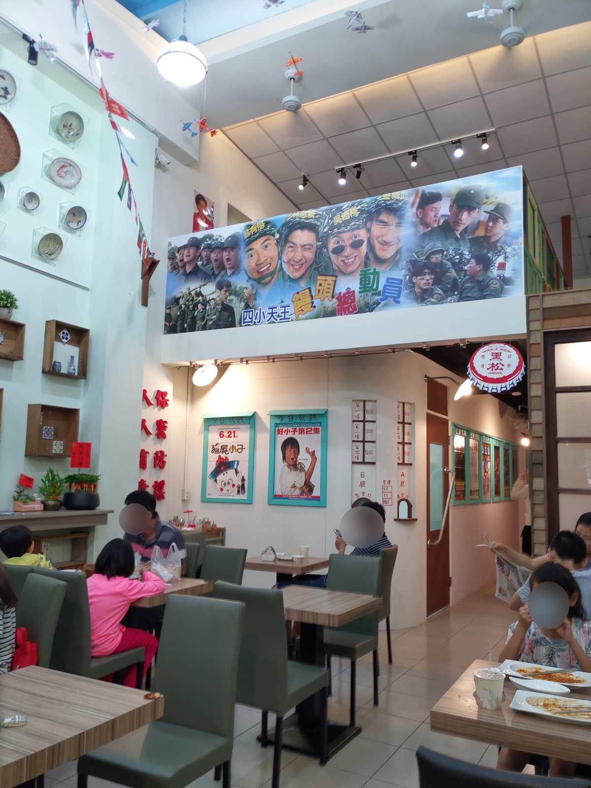
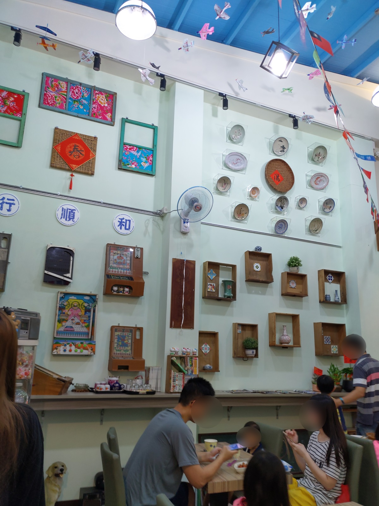
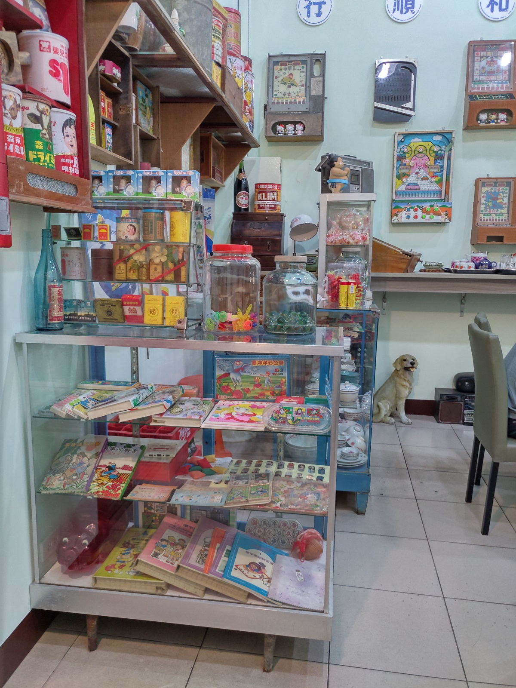
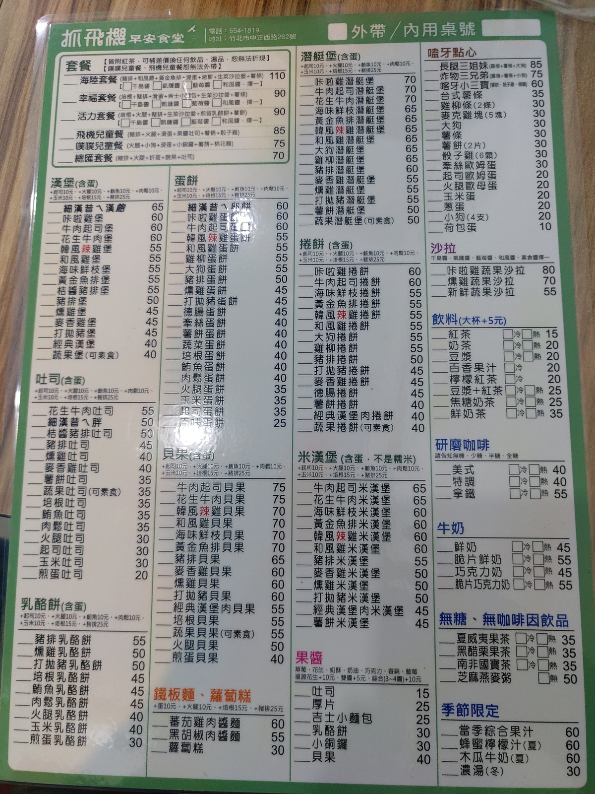
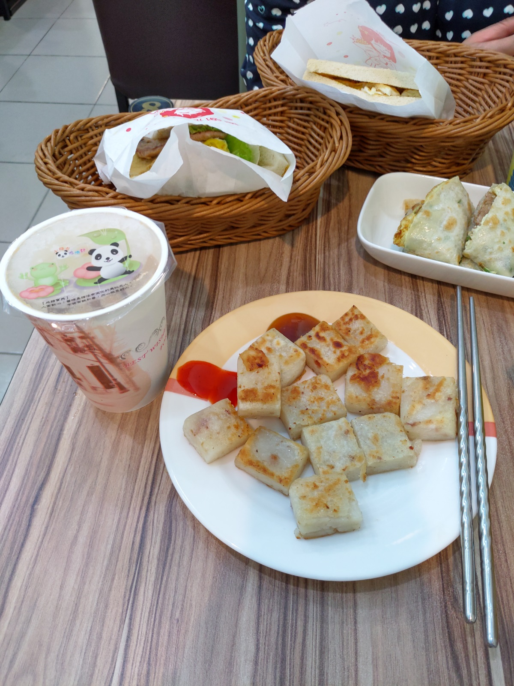

[竹北] 抓飛機早安食堂
今天本來想跑去買曾家早餐，沒想到店家似乎沒營業， 車子沿著中正西路往回行駛，突然被 抓飛機早安食堂 的裝潢吸引，就努力在附近找停車位，然後來踩雷。
餐廳名稱: 抓飛機早安食堂
地 址: 竹北市中正西路262號
門口其實就能注意到，感覺工作人員至少都30歲以上了吧? 但都穿著 40 年前小學生的制服，帽子。 老臉配小學生制服，大概懷著被老闆逼著妥協的心情，有種不協調的美感。 
本以為會走火入魔的弄來類似小學的桌椅，還好，是正常的餐桌。 
牆壁，角落，四周都充滿著收集來的老東西，老闆算蠻有心的。 老實講，現在突然要買到這些東西也不容易。  
菜單，很像一般連鎖西式早餐店的品項。 
果然，大約就是一般連鎖西式早餐店的程度。不解釋了，反正不是重點。 
食物非常的正常，來這間店主要是懷舊，總比很多靠裝潢的店，可是食物 很糟的 好太多了。總之，想懷舊的，就來這邊吃早餐吧，可以教小朋友， 我們小時候流行哪些東西，然後看到實體，很有教育的意義。